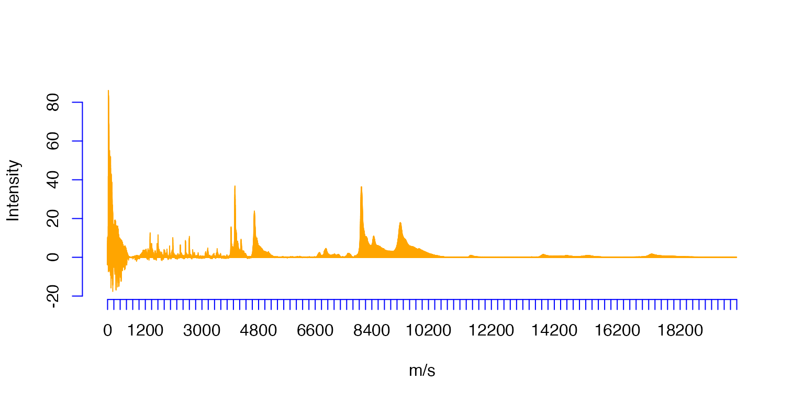
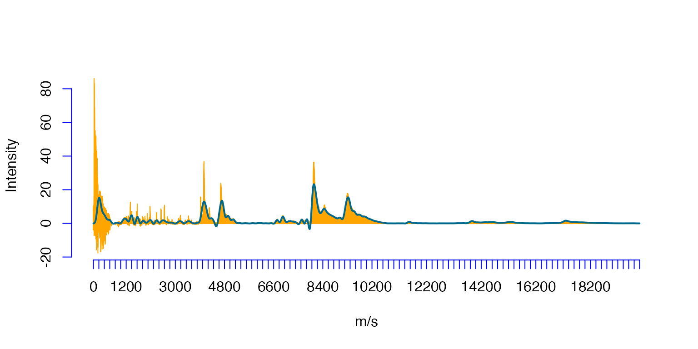
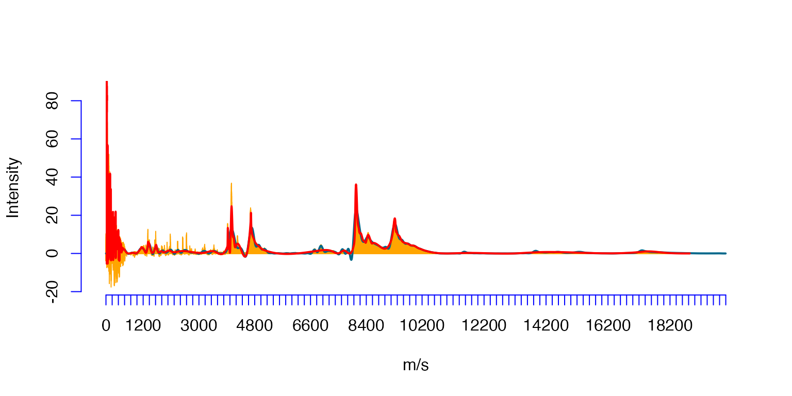
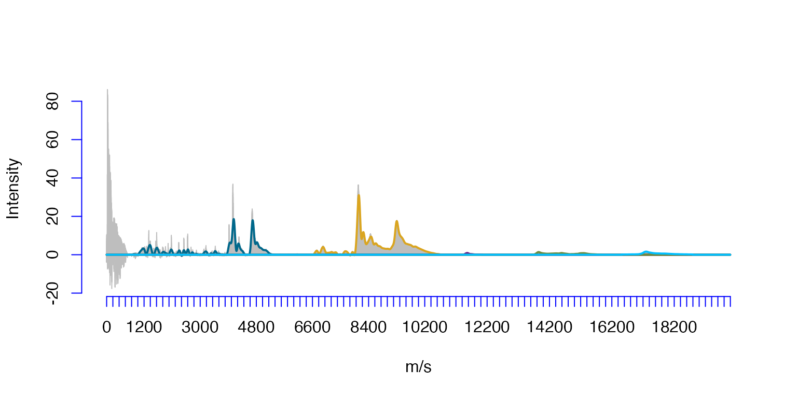

Splinets Statistical Application: mass spectrometry
MassSpectrometry.Rmd
library(Splinets)INTRODUCTION
An ovarian cancer tissue low-resolution SELDI-TOF mass spectrum (in orange) and its various representations as Splinet-objects in approximately 200 dimensional spline spaces:
Reading a raw spectrum obtained from the original data set (A01.csv).
#The file-path needs to be adequate to the location of data
# Path='../data/A01.csv'
Path='A01.csv'
Ovarian=read.table(Path,header=TRUE,sep=",",col.names=c('ms','Intensity'))The original sample (orange) consisting of 15154 values.
plot(Ovarian$ms,Ovarian$Intensity,type='h',xlab='m/s',ylab='Intensity',col='orange',axes=FALSE)#,xaxt='n')
axis(1, at=seq(0, 20000, by=200),col = "blue")
axis(2, col = "blue")
The projection (navy-blue) to the spline space spanned on 200 equally spaced knots.
#Equally spaced 200 knots,
xi1=seq(min(Ovarian$ms),max(Ovarian$ms),length.out=200)
so1 = splinet(xi1) #Orthogonal basis of splines
OvSpl1=project(as.matrix(Ovarian),basis=so1$os) #Projection to the basis
#
plot(Ovarian$ms,Ovarian$Intensity,type='h',xlab='m/s',ylab='Intensity',col='orange',axes=FALSE)#,xaxt='n')
axis(1, at=seq(0, 20000, by=200),col = "blue")
axis(2, col = "blue")
lines(OvSpl1$sp)
The projection (red) to the spline space spanned on 200 non-equally spaced knots with their locations chosen by the spectrum.
wghts=abs(Ovarian$Intensity)/sum(abs(Ovarian$Intensity)) #Weights for knot selection
xi2=sort(sample(Ovarian$ms,200,prob=wghts)) #Random knots
so2 = splinet(xi2) #Orthogonal basis of splines
OvSpl2=project(as.matrix(Ovarian),basis=so2$os) #Projection to the basis
#> The range of the input data is larger than the range of knots in the projection space.
#>
#> The 964 values at the arguments outside the projection range will not affect the projection.
#
plot(Ovarian$ms,Ovarian$Intensity,type='h',xlab='m/s',ylab='Intensity',col='orange',axes=FALSE)#,xaxt='n')
axis(1, at=seq(0, 20000, by=200),col = "blue")
axis(2, col = "blue")
lines(OvSpl1$sp)
lines(OvSpl2$sp,col='red')
The projection to the splines with a sparse domain obtained by specifying five importance regions, with the graph above each of the five support intervals drawn by a different color.
xi3=seq(min(Ovarian$ms),max(Ovarian$ms),length.out=300)
so3 = splinet(xi3)
OvSpl3=project(as.matrix(Ovarian),basis=so3$os)
IndKn=1:length(OvSpl3$sp@knots)
Nsupp=5 #the number of support intervals
LE=c(700,6500,11400,13600,16500)
RE=c(5400,10800,12100,15900,18800)
OvSpl4=OvSpl3$sp
OvSpl4@supp=list()
for(l in 1:Nsupp){
J=IndKn[OvSpl3$sp@knots>LE[l] & OvSpl3$sp@knots<RE[l]]
OvSpl4@supp[[l]]=matrix(c(min(J),max(J)),nrow=1)
}
OvSpl4@der=list()
Der=sym2one(OvSpl3$sp@der[[1]])
for(l in 1:Nsupp){
OvSpl4@der[[l]]=sym2one(Der[OvSpl4@supp[[l]][1,1]:OvSpl4@supp[[l]][1,2],],inv=TRUE)
}
OvSpl4@knots[c(OvSpl4@supp[[1]][1,1],OvSpl4@supp[[1]][1,2])]
#> [1] 735.6208 5349.9700
OvSpl4@knots[c(OvSpl4@supp[[2]][1,1],OvSpl4@supp[[2]][1,2])]
#> [1] 6553.713 10766.815
OvSpl4@knots[c(OvSpl4@supp[[3]][1,1],OvSpl4@supp[[3]][1,2])]
#> [1] 11435.56 12037.43
OvSpl4@knots[c(OvSpl4@supp[[4]][1,1],OvSpl4@supp[[4]][1,2])]
#> [1] 13642.42 15849.29
OvSpl4@knots[c(OvSpl4@supp[[5]][1,1],OvSpl4@supp[[5]][1,2])]
#> [1] 16518.03 18791.77
plot(Ovarian$ms,Ovarian$Intensity,type='h',xlab='m/s',ylab='Intensity',col='grey',axes=FALSE)#,xaxt='n')
axis(1, at=seq(0, 20000, by=200),col = "blue")
axis(2, col = "blue")
lines(OvSpl4)